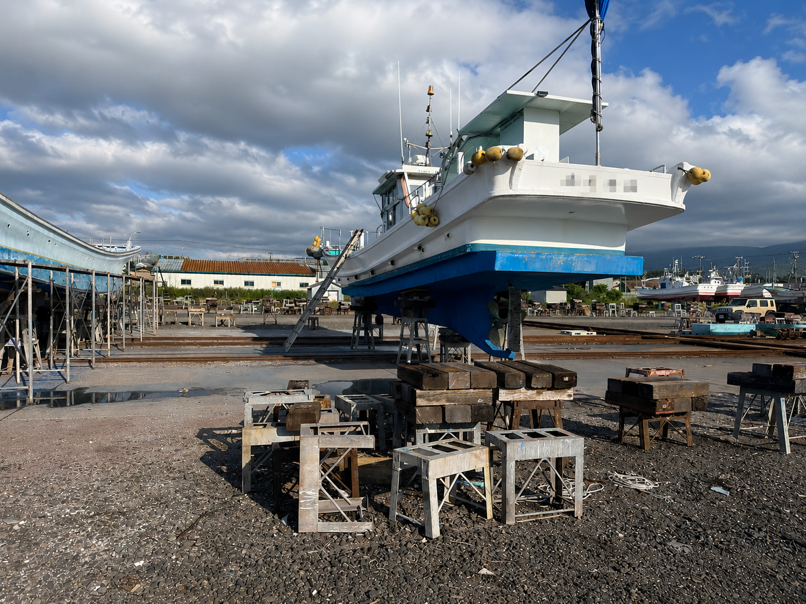
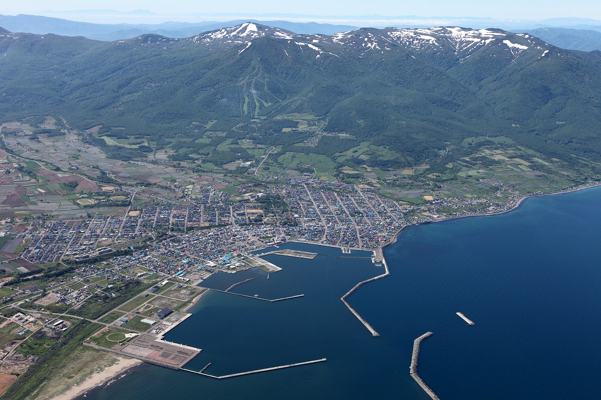

プレジャーボート保管区画
お問い合わせください
空き状況は変動します。 年間契約についてはお電話でご確認ください。

FACILITY STATUS
更新日：未設定
プレジャーボート保管区画
お問い合わせください
空き状況は変動します。 年間契約についてはお電話でご確認ください。
浮桟橋の設置状況
確認中
浮桟橋は例年11月頃に撤去します。 上下架の可否は事前にご確認ください。
INFORMATION
浮桟橋は例年11月頃に陸上へ引き揚げます。 撤去後はプレジャーボートの上下架をご利用いただけません。
船舶の上架・下架やプレジャーボートの年間契約については、 事前にお問い合わせください。
ABOUT OUR FACILITY
岩内地方船舶上架公社は、 北海道岩内港にあるリフト式の船舶上架施設です。 船舶の点検や整備に必要な上架・下架を行っています。

FROM IWANAI
岩内周辺で見られる魚や季節の海の様子を、 ときどきご紹介します。
釣果情報は確認できたときに掲載します。

ABOUT IWANAI PORT
岩内港は北海道西部、日本海沿岸に位置する港湾です。 漁業活動やマリンレジャーの拠点として利用されており、 多くの船舶が発着しています。
背後には積丹半島の山々が広がり、 四季折々の景観を楽しめる港として親しまれています。
当施設は港内に位置し、 船舶の維持管理を行うための環境を提供しています。
岩内港は漁業・海洋レジャー・観光の拠点として、 多くの人に親しまれています。